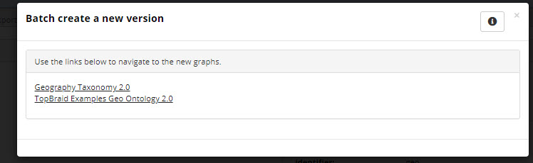

To create a new asset collection such as a Taxonomies collection, use the plus icon in the EDG application header bar or use the left navigation menu to the asset collection type to create and use the Create New button at the top of the page.
A System Administrator or any user with editor profile for the Governance Model can also create a new collection by using a Create link in the Governance areas page.
This will automatically place a collection into the chosen subject area and assign the user permissions for that subject area.
See Operationalizing Data Governance for more information on this feature.
Note
No user will have a link for creating any asset collection until an administrator configures EDG’s persistence technology as documented in Administrator Guide.
Additionally, a user will not have the ability to create asset collections unless the user or their role has a Create permission for the EDG Repositories project as documented in Access Control.
The Create dialog box options are as follows:
Label: Required.
Default namespace: Required for all asset collections except Crosswalks and Content Tagsets where it is not available.
Description: Optional.
Search the EDG: Optional.
Check this option if you want this collection to be included in the globally available “Search the EDG” feature of the application.
URI rules: Optional, not applicable to Crosswalks and Content Tagsets.
URI construction rules for assets in a collection can be set in the server administration area as described in EDG Configuration Parameters.
These selections override the server-wide settings for the collection.
The rules will not apply if an asset type has a primary key as those URIs are based on the value of a primary key property.
The user creating a new asset collection will be assigned with the manager profile over the collection.
Ontology include: Required and is available only for Data Graphs and Reference Datasets.
Used to specify an Ontology that defines data model for a collection.
Data Platform: If TopBraid EDG Data Platform feature is enabled and not selected as the default, then setting this includes the collection in Data Platform to be replicated across all servers.
This setting cannot be added or changed later.
Includes: Required and applicable only for Data Graphs and Reference Datasets.
Specifies an Ontologies collection defining the underlying data model for the data collection.
Data source: Required and applicable only for Corpora.
Selects a connector to use for harvesting documents.
From Graph and To Graph: Required and applicable only for Crosswalks.
Identifies asset collections that will be connected by the Crosswalk.
From Entity Type and To Entity Type: Required and applicable only for Crosswalks and appears when the From Graph and To Graph are selected.
Identifies the type of the assets to be connected by the Crosswalk.
Also generate property shapes for the match predicate: Optional and applicable only for Crosswalks.
Makes the match predicate available on forms and search operations if the predicate is not already covered by a property shape.
Content Graph and Tagging Vocabulary: Required and applicable only for Content Tagsets.
Identifies an asset collection containing content to be tagged and an asset collection containing tagging vocabulary – a Taxonomies or Ontologies collection.
Datatypes Collection to include: Optional and applicable only to Data Assets.
Can be selected after creation using Settings, Includes.
For Reference Datasets additional setup is required after creation.
Users will need to identify the main entity (class) for the dataset.
Main entity is the asset type (i.e. class) for the assets that will be contained in the collection.
The main entity must have a primary key property set in the underlying ontology.
For Data Graphs additional setup is required after creation.
Users will need to identify the main class which sets the type that will be pre-selected on the Search panel. .
For Content Tagsets the Create page is a two step wizard.
After making selections on the first page, users will be asked to make additional selections on the second page where the default property for tags and additional properties for tags are set.
The main ways to open an asset collection and have its content presented in the EDG Editor application are:
selecting it from the hamburger menu at the top of all EDG pages,
clicking on an asset collection label in any EDG page,
clicking on the first tab in the horizontal panel of tabs at the top of the asset collection page (e.g. Taxonomy in a Taxonomies collection),
select it after selecting the asset collection type from the left navigation page.
The Editor application may open in the edit mode or view mode depending on the user permissions:
The user that creates an asset collection is assigned manager profile for it and, thus, can edit its content.
If an asset collection is associated with a governance area, then every user with a governance role for the area will be able to view the collection (at least).
If a governance role is set up to have editor or manage profiles, then people with this role will be able to edit collection’s content.
Governance roles and direct permissions can also be specified at the asset collection level by users with the manager profile via the Users tab (see Assigning Users to an Asset Collection).
Instead of making changes directly to an asset collection, a Workflows can be started.
If a workflow is started, the user starting the workflow is its manager and will always be able to edit content of the asset collection in the context of that workflow.
Edits made directly in an asset collection are visible to all other collections that include it and to any workflows.
In contrast, edits made as part of a workflow are only visible within the working copy managed by the workflow until and unless workflow changes are committed to the production copy.
Once an asset collection (e.g. Geography Taxonomy) is in edit mode the horizontal menu bar on top of the page provids access to various operations and configurations applicable to the collection as a whole.
The name of the first tab varies depending on the type of selected collection (e.g. Taxonomy for a Taxonomies collection or Codes for a Reference Dataset collection or Mappings for a Crosswalk).
That tab starts edit mode for the collection.
The other tab names are uniform across all collection types, however, the visible tabs may vary.
For example, only users with Manager permissions for a collection will see the Manage tab.
The following screenshot shows edit mode when a concept in a Taxonomies collection is selected.
The label of an asset collection (e.g., Geography Taxonomy) is editable depending on user permissions on the collection.
The Working with Asset Collections section of the user guide explains the functions available under each tab in the horizontal menu.
In most cases the features are the same across collection types, providing a consistent user experience. Exceptions are also explained in the related documentation.
Create a Cloned Version is available under the Manage tab. It creates a clone of the current asset collection.
The clone is created with the same content and user permission settings as the original asset collection.
However, neither the change history, saved SPARQL queries, saved searches, working copies, comments or tasks will be cloned.
Cloning is often used to “fork off” a version of an asset collection, so that it can be referenced and imported separately from the current version.
For example, a user might start with an asset collection called People and, upon reaching a milestone, create a clone and call the clone People 1.0..
Then, another asset collection that should only use terms from version 1.0 could change its includes to reference the clone, while ongoing work towards version 2.0 continues on the main People asset collection.
Multiple asset collections can be cloned and versioned together in one step, including their “includes”.
To do this, place collections to clone into the basket and select the check box for the ones to be cloned.
Use the operations menu to select Create a new version.
This starts the versioning process and prompts for the following choices:
Clone Includes: Optional. If checked, the process will also create a new version for any directly included collections.
If not checked, the new version will include the same includes as the original collection.
Note that this feature is intended for the simple single-level includes case.
If the included collection contains further includes, they are not handled automatically.
Version: Required. The version stored in the metadata about the collection.
Keep Subject Areas: Optional. If checked existing subject area settings will be retained for the new version of the collection.
Name: Required. The name of the new version of the collection.
The new name for each “include” is also required.
The figure below shows a taxonomy that includes an ontology where the process will create a clone of both the taxonomy and the ontology and where the Subject Area settings will be retained.
Once the names and other options are set, select Continue.
The following figure shows a screenshot indicating success and shows links to the new collections.

TopBraid EDG Successful Batch Creation of New Version
The new version number is set in the metadata for the collection.
Note that this process does not automatically change the External Graph URI under the Settings tab if that is in use.
That URI is sometimes used as part of managing versions of collections outside of EDG.
Delete is available under the Manage tab.
Delete removes the asset collection.
When selected a message to confirm the deletion appears and clicking OK deletes the asset collection including any working copies and history data.
If the collection is included by another collection it cannot be deleted and and error is reported showing the including collections.
Note
Use caution as this action is not recoverable without resorting to restore from backup.
Clear is available under the Manage tab.
Clear removes all content in the asset collection, including its history, working copies, comments, and tasks.
The empty collection itself, its includes and its user permission settings are preserved.
This feature can be used prior to import, for example, when replacing the collection content with an externally generated version.
Note
Use caution as this action is not recoverable without resorting to restore from backup.
The Users tab lists current permissions and roles for the asset collection or workflow’s working copy.
For details on how permissions and roles work in TopBraid EDG, please see the Access Control documentation.
Users with at least manager profile use this page to modify roles and permissions, while it is read-only for other users.
For any asset collection and a working copy of a collection in a context of a workflow, access to its basic viewing, editing, and utility functions is controlled by the three nested permission profiles: viewer, editor, and manager (where each profile is a superset of the preceding one).
On each collection, these permissions are set for various users, either as individuals or as security roles (e.g., from LDAP).
Collection Permissions section list the three permission profiles and, for each, users that have it.
A blank setting indicates that no users have this profiles.
In a context of a production copy of an asset collection, permissions can be set for any user.
In a context of a workflow permissions can be set only for users that already have (at least) a viewers privileges for the production copy.
A given user can have permission profiles for the collection itself (production copy) that differ from a profile for one of its workflows working copies.
Similarly, they could have different permissions in the context of different workflows.
For example, if Jane has manager profile for an asset collection, she can give John viewer profile for it and editor profile for one of its workflow copies.
John can then make changes in the context of a workflow.
A user that has any governance role for a collection is automatically granted viewer privileges for the collection and any of its workflows.
Users can also be designated as managers or editors through their governance role.
See also
For more information see the data_governance_target section of the documentation.
A user with multiple permission profiles on a given collection or workflow receives the greatest level assigned.
This section lists governance roles assigned either directly for this collection or indirectly through a governance area it belongs to.
Users with manager profile can use this page to assign governance roles to other users: as individuals, as security roles (e.g., from LDAP), or as organizations.
When a collection is in edit mode, clicking on the Home button in the header bar or the title of the collection in the header bar will display information about the collection itself.
Edit the information about the collection itself, its subject area or version data for example, using the same Editor application as for other assets.
In addition to the Metadata view, Ontologies collections (see Working with Ontologies) have a drop down to switch to the GraphQL Schema view.
TopBraid EDG Ontologies Dropdown Views
Use that view to set information used by EDG to generate a GraphQL schema that drives the EDG user interface if using the Data Graphs collection type, for example.
In the following figure, three classes from the Geograph Ontology are set to be public classes for the ontology.
Each user can maintain a personal list of “bookmarked” asset collections or individual assets in a Basket.
The Basket is available in the left navigation menu and in addition to quick reference, allows for individual or batch operations on collections.
Those operations are to create new versions of collections or export files in .ttl or .trig format to Amazon S3 buckets for external use.
To add a collection, open the collection and select the star icon in the collection’s header.
Re-selecting the star icon in the collection’s header will remove it.
When viewing the Basket, collections can be removed individually or as a group using the drop-down Remove element.
TopBraid EDG lets users load metadata and data from external sources such as spreadsheets, RDBMs, DDL files, JSON, RDF files, XML, RSS feeds, SPARQL endpoints and other formats – with flexible mapping to EDG models.
Pre-built import options are available under the Import tab for an asset collection or a workflow (working) copy of an asset collection.
The Import tab is visible only for users with at least Editor privilege.
The available importers vary depending on the collection type.
Users may not see exactly the same importers because:
Additional importers may be configured by an organization using Import modules that are part of TopBraid EDG’s platform.
In that case, the importer is listed as one of the available options alongside the pre-built importers.
Some or all of the pre-built importers may also be deactivated by an organization.
Deactivation can be done a per collection basis using Configure Features under the Manage tab.
In that case, fewer importers will be visible than described here.
In addition to being available under the Import tab, all importers can be executed as services.
Dynamic imports from Linked Data sources, including the refreshing of previously loaded values, are executed using options available under the Transform tab.
Importers described here are effectively “pull” operations where EDG is pulling data through various mechanisms and connectors.
Using GraphQL and SPARQL endpoints to push data into EDG
EDG is an open solution and a powerful capability is for external systems to push data to EDG.
This can be done by updating EDG through its GraphQL and SPARQL Endpoints.
Import Spreadsheet using Template is available under the Import tab for all collection types except Crosswalks, Content Tagsets and Corpora.
This importer lets the user select a spreadsheet and a “template” that will be used to convert and store the spreadsheet data.
The “template” is created using the mapping process explained in the Import Spreadsheet using Pattern importer.
The imported spreadsheet must have exactly the same structure as the spreadsheet used to develop the template.
The names and order of the columns must be exactly the same.
If multiple worksheets are used, the order and structure of each worksheet (even for worksheets that are not imported) must be the same.
The mapping can also be created or edited using TopBraid Composer if the mapping capabilities are insufficient and a more complex transformations is required (e.g. concatenation of values).
TopBraid Composer’s SPINMAP tool provides a drag-and-drop interface that makes it especially easy to create more complex mappings.
Templates developed with TopBraid Composer must be stored in files with “.tablemap.” in their name (for example, myMapping.tablemap.ttl) and be uploaded to the EDG server to be available to EDG users.
Import Spreadsheet using Pattern is available under the Import tab for all collection types except Crosswalks, Content Tagsets and Corpora.
To use this importer, the worksheet must have a header row with the names of columns.
EDG will find the first row with data and will assume that it is the header column.
The Import > Import Spreadsheet Using Pattern link shows the following screen:
Use Browse to select the spreadsheet file to import.
Supported file types are an Excel file (.xls or .xlsx), a tab-separated value (.tsv) file, or a comma-separated value (.csv) file.
The file should have the expected extension.
Because an Excel file may have more than one sheet of data, there is an option to specify a sheet index value to identify which sheet to import.
The default is 1, for the first sheet.
The sheet index counts all sheets in an Excel workbook, including hidden ones.
For example, if you enter a 3 here and EDG seems to import the second sheet, there may be a hidden one between the first and second sheet that made the third one look like it was the second one when Excel was displaying the workbook.
The Excel online help explains how to check for the existence of hidden sheets.
The Entity type for the imported data identifies the class of the assets you will be importing.
Each row in the spreadsheet will be imported as an instance of the selected class and the spreadsheet columns can be mapped to the declared properties of the class.
Select Next to continue and specify the mapping.
Note
All imported assets are given the same type. To import assets of a different type, either import the same spreadsheet multiple times, with different mappings, or bulk edit the data after import.
The Select Spreadsheet Type view enumerates five possible (column-wise) spreadsheet layout patterns, showing an example of each pattern.
The 1. No Hierarchy layout is the most common and simplest to use.
We recommend users become familiar with it first, before using other patterns.
Note
The No Hierarchy import pattern can create relationships in the imported data, including hierarchical relationships. However, referenced asset must exist prior to the import when using with this pattern. In the mapping, the column used to find existing assets to reference (e.g. hierarchical parents) can be indicated. This can be addressed, for example, by importing the same spreadsheet multiple times using different mappings - perhaps once to create assets and then again to add relationships between assets.
For data explicitly structured as a hierarchy, like a taxonomy, there are four layouts from which to select.
The main difference between these four layouts and No Hierarchy is that children and parents can be imported and connected in a single import.
EDG will create and relate both the children and their parents in the same import, even if they did not exist prior to the import.
In the hierarchical layouts, each row also indicates its hierarchical path, either explicitly (absolute path, #2, #3, #4) or implicitly (recursive path #5); note that lighter text in the layout patterns indicates optional data.
These are complex import patterns that behave differently depending on the URI construction method set for the asset collection.
Depending on the URI construction method for the collection, they may not be able to be used.
After selecting 1. No Hierarchy the Import Spreadsheet page appears where the user defines the data-mapping rules from the spreadsheet columns into the target properties of the class.
The page is broken into sections:
Column Mappings
Default Concept Scheme, if a Taxonomies collections
Unique Identifiers
various selectable options
prompt to enter the mapping template name if saving the pattern for future use
Your Source Spreadsheet, data read from the spreadsheet
When importing into a Taxonomies collection and not selecting a concept scheme, EDG creates a new scheme using the name of a spreadsheet.
All concepts that do not have a broader parent nor are defined as top concepts of some scheme, will be made into top concepts of the selected or automatically created scheme.
In the Column Mapping section, the user specifies the target property to which each spreadsheet column corresponds.
The target properties are taken from target entity type (class or asset type) identified on the previous page.
When column names and property names are similar, EDG automatically proposes the mapping.
When mapping a relationship, the user can indicate inverse relationships to the target entities.
Unmapped columns and their data are ignored during the import.
The following example shows an example Column Mapping.
For the mapping to be successful, the datatype of the spreadsheet cell values should match that of the target property into which the column is being mapped.
Do not use the string “abc” in a cell value being mapped into an target property with an integer datatype, for example.
In cases where a string-valued target property supports language tags, the user is can optionally set the Language value for the import to set.
If an imported row will result in a new instance, rather than adding data to an existing instance, then one of columns should be mapped to the label property or th preferred label if a Taxonomies collection.
Those are used as the EDG display name, for auto-complete, etc.
When importing relationships EDG needs to find the existing asset to which to add a reference.
If the asset does not yet exist, EDG may be able to create a URI as the value of the reference.
After selecting a relationship property from the dropdown, the following methods for directing EDG on how to build relationship values are possible:
If the selected class has a designated Setting a Primary Key for a Class, no additional information is needed.
EDG uses the value in each row of the mapped column to form the URI of the new instance according to the primary key definition.
This option is demonstrated in the above screenshot – airport country is a relationship from airports to countries and the ontology defines a primary key for the class Country.
Therefore, the values in the mapped column must the exact value of the property used as the primary key meaning it must be unique for all instances of the class.
In the example, the Country primary key values are 2 character country codes and the Country Code column with those values is mapped to the “airport country” relationship.
Note that in this case, imported rows will always construct a reference with that URI structure regardless of whether it exists in the collection or not.
If the values in the mapped column are actually valid URLs, then they can be used “as-is” to be the URI of the referenced asset, as indicated by the associated Use values as URIs label.
If neither option 1 nor option 2 apply, the user selects a property of the related class on which to to match.
The property will be used to find assets at the end of the relationship and will only create the relationship if the asset already exists in the collection.
For example, if Country did not have a defined primary key, the user could map the Country Code column and select “ISO 3166-2 alphabetic country code” as the property to match.
Values of the matching property must be unique across all instances of the class. If duplicate values are found, then the related resource will be assigned arbitrarily.
Option 3 is demonstrated in the screenshot below – after removing the primary key from the class Country.
TopBraid EDG Import Spreadsheet - Country Code Mapping
For inverse relationships, the spreadsheet column represents links from instances of some other class to the instances the import creates.
Similar to forward relationships, if an inverse relationship is the chosen mapping, then there is a further choice of which referencing-class property to use to identify the referencing instances.
Note
As explained under Other Parameters below, if the target of a relationship has the same entity type
as the entity type chosen for the import AND Option 3 is being used then the Override existing values option must be unchecked for the relationship to be created.
When importing into a Reference Datasets collection, one of spreadsheet columns must map to the primary-key property of the main entity (class) for the dataset.
For example, the screen image above identifies this field as the IATA code.
When importing into a Taxonomies collection, the user can select a concept scheme to contain the imported concepts.
Otherwise, EDG will create a new concept scheme and make all concepts that have no parents in the spreadsheet its top concepts.
This section explains the logic EDG uses to generate URIs for the imported data.
If the import target class has a Setting a Primary Key for a Class, no selections are required .
Instead, use the Column Mapping section to map one of the spreadsheet columns to the primary key property.
Otherwise, some selections are required.
The available selections depend on the URI Construction Rules configured for the asset collection.
If the URI Construct Method is label, specify the column(s) to be used to generate the URI of each imported row as shown below.
Typically, the spreadsheet column containing the label value will map to the Id column #1, leaving the rest of mappings empty.
However, it is possible to select a different column to generate URIs or even a combination of columns.
When multiple columns are selected, their values are concatenated to form the URI.
The Start of URIs option is also available to modify the default namespace of the collection to be used as the basis of the generated URI for the import.
For a successful import adding new information to existing assets, make URI choices that will match the URIs of those assets.
If the URI Construct Method of the asset collection is either the counter or uuid, a different set of options are needed, as shown in the following figure.
TopBraid EDG Unique Identifiers Based on Counter or UUID
If the import is creating new instances, leave the selection empty and EDG will generate URIs according to the currently configured URI Construction Method for the collection,
using the default namespace for the URIs.
If the import is adding information to existing assets:
use a spreadsheet containing a column with values that are the URIs of existing assets and select that column as the URI column;
match on a property to find the existing assets. Values of this property must be unique for the entity type. If duplicate values are found, assignments will happen arbitrarily.
Other parameters are located directly below the Unique Identifiers section.
Selecting Overwrite existing values will delete an existing value for a mapped property before adding its new (different) value; otherwise, new values will be added to existing ones.
If the imported rows are adding new data values to existing instances and/or adding new instances, it is best to make sure that the Override existing values option is unchecked.
Checking this option has the following consequences:
If an instance already exists and has a value for any of the mapped columns, the value will be replaced with the spreadsheet data.
Relationships between instances of the same type that rely on matching of values will not be created (because these values may be overridden as part of the processing).
When working with a Taxonomies collection, a combination of checked Override existing values and the No Hierarchy pattern will always make imported instances top concepts of a new Concept Scheme, even if they already exist in the Taxonomy and have parent concepts.
Selecting Record each new triple in change history (warning: not recommended for large files) prevents EDG from recording the addition of each new triple in the change history.
Note
This option will not let you build relationships to assets that are members of the same class as the one you are importing – because these values can be replaced as part of the import.
A Preview button on the Import Spreadsheet form shows the RDF triples that would be generated with the currently configured settings. The browser’s Back button returns to the form.
Make this a reusable mapping template is optional and saves all of the settings on this form for later reuse.
Reusable mappings are selectable using Import Spreadsheet using Template on the Import tab instead of Import Spreadsheet using Pattern. When used, a drop-down list of the saved template names appears for selection.
When satisfied with the sample data shown on the preview, click the Finish button.
EDG will start the import, running it in the background.
After selecting one of the hierarchical patterns, there are three sections:
Column Mappings
Hierarchy
Unique Identifiers
and, as on the previous page, for convenience an example of the source spreadsheet data is shown.
There are also URI column selections below the Unique Identifiers section, unless the URI Construct Method is counter or uuid, where no option to specify columns to use as URIs appears.
EDG will always generate the URIs following the chosen method.
When the asset collection uses the counter or uuid methods, these importers CANNOT be used to overwrite existing hierarchies – they can only create new assets:
If the need is to add information to the previously imported hierarchies, use No Hierarchy import.
If the need is to add a child tree consisting of new resources to an existing hierarchy, these importers can be used.
However, the top of the new tree will not be connected to an already existing parent, that connection must be added after the import.
Most of the options on the hierarchical import pages are the same as those described for the No Hierarchy pattern.
Those are not described here again and this section of the guide focuses on the unique aspects of the hierarchy mapping.
For all the hierarchical patterns, select a Hierarchy Property (e.g. “has broader”) to connect items in the hierarchy.
Note
All hierarchical levels will be connected using the same relationship.
To create different relationships between levels, use the No Hierarchy pattern.
The Generate in inverse direction checkbox will reverse the direction of how the property specified in Hierarchy property is applied.
When working with Taxonomies collections, there is an option to select an existing Concept Scheme.
If not specified, the importer creates a new concept scheme using the name of a spreadsheet.
All concepts that do not have hierarchical parents will be made top concepts of the scheme.
This pattern works ONLY if the URI Construct Method is label.
For Path with Separator spreadsheets, in which a spreadsheet entry such as “World > Europe > France” indicates the hierarchical structure above the term “France”, the Hierarchy mapping section works as follows:
Select a column containing the path and type a separator e.g., “>”.
Identify the Column containing the last node of each path string
In the Column Mapping section, to generate a name for imported resources, make sure to assign some column as the preferred label (in case of Taxonomies) or as the label (for all other asset collections) – to generate labels.
This will typically be the same column as the one you selected in the Hierarchy section as containing a last node of the path.
Map this column again in the Unique Identifiers section.
If not specified, EDG will use row numbers to generate URIs.
Alternatively, use other column(s) to generate URIs.
When using this pattern and when URI Construct Method is counter or uuid, the spreadsheet needs a single column containing the label for each asset.
When URI Construct Method is label, there is not need for such a column, EDG will assume that the hierarchy columns contain the labels.
For Column-based Trees spreadsheets, the Hierarchy mapping section works as follows:
Specify the top and bottom levels of the hierarchy by picking the first and last columns containing hierarchical levels.
All hierarchical columns must be located together and sequentially in the spreadsheet.
If a column is mapped in the Hierarchy section, DO NOT map it in the Column Mapping section nor the Unique Identifiers section.
These sections are used ONLY for mapping columns that do not specify the column based tree.
If the URI Construction Method is label, EDG will assume that the hierarchy columns contain labels of respective resources.
If not label then, as mentioned above, a separate column (outside of the hierarchy) needs to contains the label for each resource
If the URI Construction Method is label, leave the Unique Identifiers section empty and EDG will use values in the hierarchical columns to generate URIs.
Only make mappings in this section to override the Label-based approach and use some other values for the URIs.
Carefully examine the Column-based Trees sample layout on the Select Spreadsheet Type screen.
It is important that each item in the hierarchy has a row of its own. See below for correct and incorrect options.
It is important to remember that, as with all spreadsheet import options, all resources will be imported as members of the same class as selected as the start of the import mapping definition.
An import cannot support Level 3 representing countries and Level 2 representing continents.
This pattern requires a path column, where values are such that removing a string of a fixed length from a value identifies a parent for a resource on that row.
For example, if using 2 character segments and “Australia” has a path column value of “010201”, its parent would be on a row with a path column value “0102” and its parent’s parent would be on a row with path column value “01”.
EDG finds a parent by removing the exact number of characters specified in the segment length from the child’s path column value.
The top most items could have a path column value that is different from the segment length e.g., 1 instead of 01.
For Path with fixed-length Segments spreadsheets, the Hierarchy mapping section works as follows:
Specify the column with the path values.
Specify the length of the segments to use to calculate the parent row.
In the Column Mapping section, to generate a name for imported resources, make sure to assign some column as the preferred label (in case of Taxonomies) or as the label (for all other asset collections).
Otherwise, labels will not be generated.
If the URI Construction Method is label, map the same column again in the Unique Identifiers section.
If not specified, EDG will use row numbers to generate URIs.
Alternatively, use other column(s) to generate URIs.
For spreadsheets following the Self-Join pattern, the Hierarchy mapping section works as follows:
Specify the Column containing the parent ids – this column will not necessarily be used to generate URI, it is simply a way to match children and parents
Specify the Column containing the child ids – this column will not necessarily be used to generate URI, it is simply a way to match children and parents
In the Column Mapping section, to generate a name for imported resources, make sure to assign some column as the preferred label (in case of Taxonomies) or as the label (for all other asset collections).
Otherwise, labels will not be generated.
Typically, but not necessarily, this will be the column you used as a Column containing the child ids.
If the URI Construction Method is label, map the same column again in the Unique Identifiers section.
If not specified, EDG will use row numbers to generate URIs.
Alternatively, use other column(s) to generate URIs.
Import Data Set from Spreadsheet is available under the Import tab and is available only for Data Assets collections.
It reads the input spreadsheet and creates an EDG Spreadsheets Workbook instance, and a Spreadsheet DataSet instance that is part of the workbook and with related DataSet Element instances for each spreadsheet column.
The import also includes data profiling for each imported column as shown in the following figure.
Import Crosswalk from Spreadsheet is available under the Import tab and is available only for Crosswalk asset collections.
The input spreadsheet must contain two columns:
the first column must contain the primary key used to build URIs of resources in the From asset collection;
the second column must contain primary key used to build URIs of resources in the To asset collection.
Import Property Definitions (Schema) from a Spreadsheet
A spreadsheet can be used to to create property definitions for a class in an Ontologies collection.
For information on how to do this, see the guide on Creating Property Shapes from Spreadsheet Columns.
Import DDL File is available under the Import tab and is only available for Data Assets and Datatypes.
It reads DDL statements (CREATE TABLE, etc.) from an SQL file, and creates corresponding entities in EDG.
When importing into a Data Assets collection, the following entities from the DDL file are created:
a Relational Database
any Database Tables defined
any Database Views defined
the Database Columns of the tables and views
a Physical Data Model that serves as a container for the entities about the database
Database name: The importer will prefix all entity names with a database name, to distinguish the entities created by importing different databases. If no database name is specified, then the name of the SQL file will be used (e.g., NORTHWIND for northwind.sql). The database name serves a role similar to the Catalog names and Schema names within a database server.
Model for Datatype Definitions: The importer also stores the datatype of each table column. It will re-use existing datatype definitions for previously seen types, and create new ones for the rest. The drop-down tells the importer where to look for datatype definitions and where to import new ones. The options are:
Any EDG Datatypes that have been included into the Data Asset (via General > Includes).
The Data Asset itself.
To store imported datatype definitions, we recommend using EDG Datatypes rather than storing them in the Data Assets themselves.
The DDL import functionality supports MySQL, Oracle, PostgreSQL, SQLServer, Hana, Snowflake, Teradata and Hive.
In many imports two forms of problems occur:
SQL statements that cannot be parsed: When an input file cannot be parsed, the import process will be aborted and nothing will be imported.
An error message will be shown indicating the location in the file where the parse error occurred.
It may be possible to manually edit the SQL file to remove the unsupported SQL features.
SQL statements only partially understood: In some cases, the importer will be able to understand the basic intent of a DDL statement, but not a specific parameter or argument to the statement.
In this case, it will continue and import whatever was understood.
Therefore, imported data should be carefully reviewed to ascertain that all needed information has been imported.
Import From JDBC Connection is available under the Import tab and is only available for Datatypes and Data Asset Collections.
Functionally, import from JDBC has the same purpose as from a import of a DDL File, except that the DDL source is a live connection to a database server, rather than a DDL file.
The parameters for the import are:
Model for Datatype Definitions: If not available, create a new EDG Datatype collection which will automatically be populated with some standard data
JDBC URL: The connection address-string, which may depend on the database type (e.g., jdbc:mysql://localhost:3306/mydb123)
User Name and Password: A database login with access to the desired tables.
Note
If the password is already in EDG’s secure storage, it may be omitted.
Database name: the desired database/schema that identifies the scope of this DDL import operation, .
If not provided, the import will use the default scope of the user or connection.
Include data statistics: If checked, this will compute statistics summarizing the data contained in each imported entity (table, view) and column.
Edit or view the data asset collection and select each asset item to see the details of its resulting statistics.
Include data samples: If checked, this will collect sample rows from each entity (table, view).
Edit or view the data asset collection and select each entity table or view to see the sample data.
Maximum number of data samples per table: When including data samples, the upper limit of rows to collect from each table for the sample data.
Record each new triple in change history: If checked, each imported triple is recorded in change history, which is not recommended for large imports.
Note
This option is not visible if Record Triple Count option under the Manage tab is activated.
Schedule Import: lets the user schedule imports to run on a recurring schedule.
Import RDF File is available under the Import tab.
Any asset collection can import data from an external RDF file.
The Import > Import RDF File link shows a screen where the Browse button opens a dialog to select the external RDF file.
Choose the RDF file and select its Format, noting that the file may be compressed.
The compression formats ZIP (.zip), gzip (.ttl.gz etc) and bzip2 (.ttl.bz2 etc) are supported. Only the first file in a ZIP archive will be imported.
Then, if applicable select the following options:
Record each new triple in change history (use with care for large RDF files!).
If importing into a Working Copy, history will always be recorded and this option is greyed out.
Direct streaming import into production copy, available only for users with at least Managers permission.
Direct streaming is not available for import into Working Copies.
Perform constraint validation only
Validate the RDF file content combined with the existing collection data
This is necessary because some violations only become apparent for the combined data.
Click Finish to complete the the operation.
A message will indicate whether the import was successful.
For large imports, this process may take minutes.
Please check the status on the Reports tab for File History Report.
Note
If an RDF file contains any “schema” definitions such as classes, properties, or shapes, then it can only be imported it into an Ontologies collection.
When importing RDF into a Working Copy, the addition of each triple will be recorded as an entry in the change history, where it will be available to all the relevant reports.
When importing into a Production Copy, the Record each new triple in change history checkbox gives you the option of adding these to the change history;
Note
This is not recommended when importing large amounts of data.
The option of Direct streaming import into production copy imports the content much more quickly and uses less memory.
This should only be used for large imports if the user is confident they do not need to do validation or clean up on the data.
It’s best to perform a backup (e.g. Export RDF File) of the collection prior to importing with direct streaming or use a workflow so that reverting is possible should anything go wrong.
When importing RDF files into an Ontologies or a Taxonomies collection, EDG performs some transformations (unless the streaming import is chosen):
For Ontologies, “subclass of Thing” statements will be added for classes that have no parents.
This is done to ensure that these classes are visible in the Class Hierarchy.
For Taxonomies, “narrower concept” relationships will be used to generate inverse “broader concept” relationships.
This is done to ensure that such concepts are visible in the Concept Hierarchy.
Auto-create Property Shapes from a SPARQL Endpoint
Information in the Knowledge Graphs that are external to an EDG installation can be used to create property definitions in an Ontologies collection.
Import from SharePoint Term store is available under the Import tab and is only available for Taxonomies.
Its purpose is to connect directly to a Sharepoint installation and import the stored terms it finds creating a taxonomy in EDG.
Once selected from the list of importers, EDG automatically uses the pre-configured Sharepoint connector.
The user is then prompted to select a Term Set found in Sharepoint to import, and to then click Continue.
Th importer will then import the Term Set and create an RDF model of it.
If the Term Set was previously imported, the newly imported model will be merged with the existing one.
If a new, clean imported set of data is preferred, then delete the Term Set from the collection before re-importing it.
Selecting the button opens the Import TriG File page and the user simply uses Browse to select the TriG file and then Finish.
TriG files contain one or more named graphs.
The named graphs that follow the EDG naming convention (e.g. urn:x-evn-master:geography_ontology) will be imported as asset collections with the importing user as the manager.
Other named graphs will be imported as Turtle files in the EDG workspace.
Any pre-existing graphs remain unchanged.
The import is not permitted if:
a named graph already exists in EDG to which the importing user does not have at least read permission;
there are any triples in the default graph of the TriG file.
EDG can create TriG files exported using Export > TriG with Includes or Server Administration >Create TriG file of all EDG production graphs (used for testing to backup or replicate a set of collections).
Import Property Definitions (Schema) from a SPARQL Endpoint
You can use information in the Knowledge Graphs that are external to your EDG installation to create property definitions in an ontology.
For information on how to do this, see the guide on Deactivating Property Shapes.
Import Concepts from Documents is available only for Taxonomies.
It is particularly suitable as a way to seed a new taxonomy.
When the user selects a file to import, EDG will analyze the file extracting concepts from it.
Extracted concepts are presented for selection in order of their frequency in the document.
The user then selects the concepts to be added to the collection, placed in an EDG-generated scheme to “hold” the new concepts.
The user then manually organizes them hierarchically, as desired.
Import Single Document is available only for Corpora allowing users to upload documents into a corpus one document at a time.
Import of documents and associated metadata into a Corpora asset collection is performed dynamically according to the connector option selected when creating the corpus.
File Imports Report is available under the Reports tab and shows the history of file imports into the collection.
The form will periodically refresh, and the refresh timer can be paused as shown.
This also shows any current running file imports.
The report includes information about the importing user, the success or failure of the import, a summary, the datetime, the process ID and the workflow name, if applicable.
Currently executing imports are included in the list.
When importing directly into an asset collection the Record each new triple in change history checkbox is available which sets the option to record each individual change in the change history.
Warning
The default is unchecked and it is not recommended to select this option when importing large amounts of data.
When this option is left unchecked, the change history will contain a record capturing that an import was executed, but will not contain every individual addition or deletion of data.
Record Triple Counts can be activated under the Manage tab for an asset collection.
If activated, the change history will only record the numbers of added and deleted triples instead of the details about each triple.
That significantly reduces the size of the change history. This choice removes the Record each new triple in change history option for the collection during import.
When the import is executed in the context of a workflow, each change is included in the change history, where it will be available to all the relevant reports.
Additionally, the decision not to retain detailed history upon completion of the workflow could be made when designing a workflow template.
Archive Working Copies on Commit can be activated under the Manage tab.
If activated, detailed change history for committed working copies will be automatically archived.
Note
This has precedence over the Record Triple Counts only option, i.e. the archive will contain the full history before being compacted.
Editor applications are composed of panels that are combined to form layouts.
Multiple layouts are available.
Each collection type has its own default layout.
Users can change these defaults.
For example, the default layout for business glossaries will have two panels – Search and Form, looking as follows:
Each panel can be displayed in the entire with of the screen by closing all other panels.
This is useful when you need more screen real estate for working.
To reset the layout, just select a layout from the menu and your panels will come back.
Or you can drag them back into view from the panels menu.
The next image shows how the Glossary Editor Application would look if the Form panel was stand-alone.
Panels can also be rearranged by dragging and dropping.
Panels can be stacked behind each other in the same screen area.
In the image below, the Change History panel is stacked behind the Form panel.
TopBraid EDG Advisory Affiliate Change History Page
Panels can be closed by clicking on the ‘x’ button in the panel’s header.
This action removes a panel from a page.
Clicking on the Panels button displays additional selection of panels to add to a page.
Some panels can be placed on a page more than once and remain in the menu even if they already exist on a page.
Other panels make sense only once per page and, when already shown on a page, they no longer appear in the menu.
Some panels may have a pin icon – for example, if two forms are open.
Pining a panel down will ensure that its content will not change if another panel is clicked.
Once a panel is added or removed from a page, that choice is remembered for the user in their next session.
The Layouts button save arrangements of panels as a layout.
Users can also switch to one of the existing layouts.
A saved layout can be made available to other users or kept private.
It could also be declared as a new default only for the user who created it or for others as well.
Single Form Layout – displays only the form for the selected resource
SPARQL Layout – provides a way to run SPARQL queries as an alternative to clicking on the Export tab > SPARQL Endpoint.
Unlike the option on the Export tab, it is fully integrated with the editor.
Classes and Instance Layout – useful for Enumerated values.
Search Layout – a convenient page layout for Search operations, combines Search, Search Library and Form panels
Problems and Suggestions Layout – provides a way to execute Problems and Suggestions checking
The Layouts menu also lets you manage existing layouts by selecting “Available Layouts”.
More icon in the header provides access to application settings and additional navigation options for user UX personalization. These settings are locally stored per user and won’t effect other users.
Display Edit Actions as Icons button turns various menu options into icons and vice versa.
By default, Display Actions as icons is checked.
Unchecking it will impact all panels that have Create New actions and there is more than one action in a panel.
Currently, these are Property Groups and Taxonomy Concepts panels.
Instead of the icons, we will see Add menu with dropdowns.
For example:
Checking the option to Display Settings as icons will impact every panel that has a Settings menu (gear icorn).
Instead of the menu, we will see icons for each option.
Checking Display Panels palette option, will place in the header an icon for each panel – as shown in the screenshot below.
Clear locally stored Settings button will clear out any personalization of the UI with the exception of the Layouts as those are stored in the system, not the browser.
Any check box, Asset List, or other personalization you have made will be reset.
Checking Hide values in non-preferred languages option will hide property values tagged with languages that are not set in your browser as one of your preferred language.
Manage default settings for all users … button will appear only if you have Manager profile for a collection.
It will display a page where you can pre-set panel Settings for all users of a collection.
For example, you can use it to ensure that for all users, when they look at the content of the current asset collection, the Form will show properties even if they don’t have any values.
The remainder of the menu is navigation/search options.
This option is available only if the asset collection editor offers Search Panel.
When using Search Panel, there is an option, Return local results only, which excludes results that come from included asset collections.
(A local search only delivers resources having their rdf:type triple in the base graph.)
By default, users can choose for themselves whether to enable or disable this local results option on any particular search.
However, managers can permanently set this option as either always local or always global for all users.
If set by a manager, then users will still see the setting value on their search panes, but they will not be able to change it.
This option is available only if the asset collection editor offers Search Panel.
It impacts the Type Selector in the Search panel, determining what will be shown in its drop-down list and what will be the root of the browsable hierarchical navigator listing available asset types.
Each asset collection has a default main class.
This option lets you modify the default.
This option lets you reset which class will be shown as the root in the Class Hierarchy Panel.
The default root is Thing.
However, you can use this option to limit the class tree to one of the subclasses of the owl:Thing class.
You can also use this option to go “up the tree” by setting the root to rdfs:Resource class or any of its subclasses that are different from owl:Thing.
Pencil icon lets you name an asset list.
The above asset list has been named “customer”.
To create another asset list, drag the asset list panel from the panel selection to your window.
Now when you choose to add to an asset list, you will choose which of your two asset lists.
Asset lists are private until shared.
Cloud icon opens a menu that lets you open an existing asset list and share an asset list you create with colleagues who have permissions to this collection.
They will be able to go to “Open an existing Asset List” and find all of the shared asset lists along with their own.
The settings menu lets you configure how information about assets in a list is displayed e.g., whether a person who added it to a list is displayed as a column.
The Search panel lists assets of the selected type in a sortable table.
From here, users can further filter displayed assets, export information, save searches and perform other operations.
Note
This panel is not available for ontologies, please see ontology specific documentation in Working with Ontologies.
By default, this panel will display up to 1,000 result rows.
This default can be changed by your EDG Administrator.
The Type Selector shown at the top of the Search panel lets you to select the type of assets to show in the table.
You can select an asset type either from the Type drop-down list (it supports autocomplete so to select you can start typing the name of an asset type you are interested in) or you could click on the button next to the drop-down list to open a browsable hierarchical navigator listing available asset types.
Table in the Search panel shows only assets of the selected type including any of its sub types.
The Columns icon to the right of the Filter icon lets you add columns to the search results table.
Properties available for selection depend on the type of the asset.
For example, Database Column is selected as the asset type in the image below.
You will be able to select any properties defined for the Database Column asset type.
You can scroll through the list of properties available for selection or quickly find a property by typing in the Search field at the top of the dropdown.
Clicking on a property will select it as column.
Currently selected columns will be shown at the top of the drop down list.
To remove a selected column, click on the “x” icon next to it.
For properties that are relationships, you will see “>” to the right of the property name – as shown in the screenshot above.
If you click on it, EDG will present a list of properties for the related asset.
This way, you can add as columns not only properties of assets you are looking at, but also properties of related resources – these are called nested columns.
The screenshot below shows a results table that we will get after selecting as columns 1) “record count” property that belongs to related assets – namely, Database Tables that assets of the selected type, Database Columns, are associated with via “column of” property – this is an example of a nested column and 2) “physical datatype” property that belongs directly to the Database Columns.
If a column is a nested column, the header row will display the connecting relationship name in the square brackets.
Cell values for such columns will display the related assets before displaying the value of the selected property.
You can select more than one level of nesting.
You can search among the assets of selected type by using:
Free text (any property). This matches your string against any property with textual values e.g., label, description, note, etc.
This query is wildcard.
For example, searching for “rock” will be interpreted as rock and return results for “rocket”.
Multiple word free text searches will be AND not OR.
A B means an implicit AND
“A B” matches the full term (in exactly that order)
A OR B means an ‘or’ – infinite chains are supported such as A OR B OR C OR D
TopBraid EDG Searching for Assets using Free Text
Filter on specific property values.
The filter icon will open a drop down listing available properties and letting you select one or more.
This works similar to Columns drop down, including ability to select properties of related assets.
For each property selected using Filters drop down, you will be able to enter a search criteria and specify the type of match.
Type of match determines how EDG will use the value you enter in that field to search for matching data.
Different properties can use different match types.
Search criteria specified for each property are combined together to produce an overall search result.
How a search value matches instance property-values
contains
DEFAULT for text properties: Finds resources that contain the entered search string (case-insensitive) in the property value.
Example: Search text “lis” on a city-name property would match instances having city-name values such as “Lisbon”, “Lisboa”, and “Minneapolis”.
equals
DEFAULT for relationships: For attributes, this will match the entered string exactly to the property value (case-sensitive).
For relationships, this becomes an auto-complete field for selecting a related asset.
As you start typing a value in a relationship field, you will get a list of autocomplete options that match the text you’ve typed so far—a list of the names (labels) of any resources that begin with the typed letters.
regular expression
For text properties, searches text using a regular expression that matches a property-value (case-insensitive).
Example: Search text “^lis” as a regular expression matches city-name values that begin with “lis”, e.g., “Lisbon” and “Lisboa” but not “Minneapolis”. Conversely, “lis$” would match only at the name’s end.
For relationships, does similar matching, but on the labels of related resources.
any value
At least one value exists for the selected property (count >= 1).
Example: See how extensively a property is used.
min/max number of values
Finds resources whose number of values for selected property fall in the range specified by the one or two numbers you enter.
Example: If most resources in a Data Assets Collection have labels in three languages, entering a label search with values-range 0 to 2 would return those instances with fewer.
Leaving min range empty and just using 2 in the max field will return the same results.
no value
No values exist for the search property (count = 0).
Example: Use to clean up a Data Assets Collection and check for remaining work.
boolean
DEFAULT for Boolean properties: Search values restricted to true/false instead of free-text
nested form
Available only for relationships: Adds an embedded search form for properties whose type is another class
min/max (inclusive)
DEFAULT for numeric properties: Finds resources that are within the range of entered search criteria, inclusively.
min/max (exclusive)
Finds resources that are within the range of entered search criteria, exclusively.
Refine field is displayed at the top of each column under the column name.
Entering a value in this field refines the results displayed in the table.
The Refine is similar to Filter except that it only affects the visibility of assets that are already in the results table, without affecting which assets are loaded into results table, i.e., the underlying search scope is unchanged and refine only narrows data already in the table.
If you have incomplete search results, over 1000 if you have the default settings, you can still search the entire collection as well as export all the search results:
The Search panel has New button.
Clicking on it, will let you create a new asset of the currently selected type.
The Search panel also offers several other actions that can be performed on the search query or on the search results.
These actions and the corresponding menus and buttons are shown in the next screenshot and explained in the text below it.
Save Search button.
Will bring up the dialog to save searches.
Saved searches are public and can be seen and used by any other users of this collection.
To run or delete previously saved searches use the Search Library panel.
Settings menu for Search Panel.
Lets you personalize the behavior of this panel.
Hide Quick Asset Type Selector – will hide the type selector menu but leave the type selector menu in place.
Disable auto-searching – this will change the behavior of the free text search box.
You will need to hit enter when ready to submit instead of the results auto populating as you type.
Add a column for each filter – checking this box will add a column to the results table each time you add a property as a filter for the search.
Return local results only – this will filter out included collections.
Export. Provides access to the various export options for search results.
The entire search results are exported unless you check certain results rows, then export will be limited to those rows.
More. Provides access to several actions that can be performed on selected results.
Check the row boxes for the items you want to perform these actions on.
Delete
Add to Asset List – which is another panel in the editor used for bulk functions or bookmarks
Add to Basket – which is the basket for all of EDG located in the left navigation menu
Edit assets – will launch a Batch Edit wizard tool
Show on Map Results Panel – this option will be available only if Map Explorer Panel is enabled.
Clicking on it will display selected items on the map – provided that they have geo coordinates.
The EDG editor search panel uses a Lucene index.
The default StandardAnalyzer for our Lucene implementation drops characters such as / and – while the WhitespaceAnalyzer preserves them.
To search over special characters (such as / ? and -) enable the WhitespaceAnalyzer option in the EDG Configuration Parameters page.
You will need to rebuild the search index after making the switch. This can be done on the Text Indicies page. Changing this configuration parameter will also apply to the Search the EDG and a rebuild of Search the EDG index will need to be done.
You can modify asset information directly by editing it in an asset collection or you can use Workflows and edit information in the working copy of the collection that is managed by the workflow.
Irrespective of the choice, editing options are the same.
Asset information is modified primarily using the form panel.
Clicking on the Edit button on top of the form opens all fields for editing.
Alternatively, to clicking on the Edit button, users can do inline editing.
Mouse over the area between the field name (e.g., definition) and the field itself.
You will see a pencil icon.
Click on it to start editing one property at the time.
TopBraid EDG supports modular management of information.
You can create resources in one asset collection, then include this collection into another one and add more information about these resources.
See also
See :ref:’combining_asset_collections_target’ on how to combine asset collections through includes.
The hue of the icon at the top of the form will indicate if that resource is from the selected collection or is included from another collection.
If included from another collection, the icon will be a lighter color.
Further, you will see at the top of the form information about a collection where this resource is defined in.
You will be able to click through to that “defining” collection and modify the resource there.
If you do not go to the defining asset collection and decide to edit an included (or referenced) resource in your current collection:
You will only be able to add information and will not be able to remove or modify any of the information from the included collection.
The changes you make are added to the collection you are currently in, not the collection this resource has come from.
Similarly if you choose to delete an included resource, only the changes you made in that collection will be deleted, not the original resource.
If you want to make changes to the statements that are included, use Explore -> Open in Defining Asset Collection.
This will open the asset in the collection where it was originally created.
Click on the + (plus) sign to the left of the editable field to get a slot for a new value.
Plus sign will appear only if the property could have more than one value. Click on the – (minus) sign to the right of the editable field to remove a value.
For attribute values, you can just type the value.
A convenient picker may appear depending on the datatype e.g., a date.
EDG will protect you from making mistakes.
For example, if a value is supposed to be an integer, you will not be able to enter letters.
Note
A language tag for a string can be selected from the dropdown to the right of the field – if a value is defined as a language tagged string.
The dropdown icon to the left of the delete icon lets you switch to a different edit widget – If multiple types are defined for an attribute e.g., a string or a language string or HTML.
For string values, you will be able to switch between a “text field” (a single line entry field) and a “text area” (a larger text box).
Options shown are determined by the schema (ontology) that defines the asset type.
Start typing the name of the existing resource and pick it from the auto-complete.
Enter the URI of the related asset. The dropdown menu available by clicking on the “v” sign to the right of the field will let you switch between using autocomplete (default) and entering a URI.
Use search to find the resource you want to connect to by clicking on the button directly to the right of the field – as shown below.
Create a new resource by clicking on the button directly to the right of the field – as shown below.
Drag and drop assets from other panels directly into a form.
After at least one change is made, Save Changes button becomes clickable.
If any of the edits presents an issue, the page will display them.
You will have a choice to correct issues prior to saving, cancel edits or save them as-is.
Preview button will display added and deleted statements as well as any issues.
TopBraid EDG Preview of Form Edits for United States
Sometimes, to the left of a field open for editing you will see a + icon surrounded by a square shape.
Clicking on it will open a subform that lets you make statements about property’s value.
For example, you may want to say that a value of a country code or a status has an effective start and an effective end date.
When information shown on the form is a relationship, you can:
Right click to see and use menu options for the related resource.
Click on the dropdown to switch the display to show URI of the related asset instead of its label (in view not in edit mode).
You can also click on Show Details to see the embedded form for the related asset.
Sometimes, a form may display information in tables and/or display generated diagrams.
What to display as a table is defined in the associated ontology models and can be configured.
For example, in the form below for a database table from Northwind you see two tables: one containing data sample (not editable) and one containing records of data quality runs (editable).
TopBraid EDG Data Sample & Data Quality Records Tables
If a value of a property is displayed, but not editable, it means that one of the following is true:
Values for this property are automatically calculated (inferred) by EDG.
Rules for inferring values are defined in the underlying ontologies.
Some values may also be inferred by default, but still editable.
In this case, any user edit overrides system inferences.
Or
Value has been entered in an asset collection that is included in the currently selected collection.
In this case, you will not be able to remove or change the value.
To edit it, you must navigate to the defining asset collection.
If, however, the property can have multiple values, you will able to create additional values for such properties.
Or
Property has been set as “read only” in the underlying ontology.
This may happen if your organization wants to control addition and edits of values for certain properties in the UI e.g., to make such edits possible only through import or APIs or to make them possible only in certain asset collections or to protect users in certain roles from incidentally modifying these values.
The view you will see by default will depend on your role and selections made in the relevant ontology.
If an asset shown on a form has multiple types or different role-based views, it can be viewed and edited using any of these perspectives.
In such cases, you will see a dropdown box at the top right of the form next to the settings menu.
You will also be able to select a Merged view that, for assets that have multiple types, will combine properties of all types.
To do this, select Settings>Merge properties from all suitable view shapes.
Additional Options for Viewing and Modifying Data
Additional options for modifying data in other editors panels are as follows:
Source Code Panel: This is a low-level technical operation and should be only used by users who are well versed in RDF, the underlying data model behind EDG. Your EDG Administrator can disable access to this panel for some of the users.
ref:sparql_query_panel Update access must be enabled on the server to modify through SPARQL queries.
You can also modify data through GraphQL in EDG accessible from each collection’s Export tab.
The Forms for classes, SKOS concepts and concept schemes have a section called “Display” where you will find the “hidden” property.
Setting it to “true” will hide these resources from the panels that display tree views – Class Hierarchy panel (in case of classes) and Taxonomy Concepts panel (in case of concepts and concept schemes).
When a parent is hidden in the tree, all its children also disappear from the tree – unless they have another parent.
The Class and Taxonomy Concepts panels have a “ghost” setting to show hidden items.
To do this, select Settings> Also show assets marked as hidden.
Batch Edit is available from the Asset List Panel, Instances Panel and Search Panel.
Where you see the following menu item once you select multiple assets:
The wizard will then let you select properties you want to change and walk you through modifying data using features similar to those of the Form Panel.
If the Jira feature has been configured for the EDG server, then a manager can set an associated project-key string for each asset collection.
Jira Project Key is available under the Manage tab.
See Using Jira Tasks for more details.
Once set, if a user is logged into Jira, they can launch from editor resources into related Jira searches and create new issues in the collection’s corresponding Jira project.
On a selected resource in the form panel, use the modify menu select any of the following:
Create Jira Issue, Search Jira issues by label, or Search Jira issues by URI.
The two searches will open (as new browser tabs) JIRA pages that search on the indicated resource string (URI or label).
The create option will open the start of a new Jira item.
TopBraid EDG Create and Search Jira Issue Dropdown
Note
If the browser is not logged into Jira (or if the administered JIRA settings fail), then the launches can result in a Server Interaction Error message dialog.
Please check the server logs for details in that case.
The Source Code panel allows users to view and edit asset data in the Turtle serialization format.
Editing source code is a low level operation for expert users and care should be taken.
IT is possible to cause damage to the EDG workspace making it unavailable.
An administrator can configure the EDG server to block all edits to source code, which is recommended for organizations without expert users knowledgable about editing Turtle serialization.
The Source Code panel can also be hidden from users in certain roles.
Depending on the situation, you may see two windows: upper window will show content of the current graph (asset collection) and lower window may show content from included graphs, if any.
The latter is not editable.
The upper window lets you edit.
You can make changes and click on the Save Changes button.
If there are any syntax errors, Save Changes will not be available.
Prefix declarations can be expanded and collapsed. Do not make changes to prefixes here.
Change them as described in Controlling Namespaces and Prefixes .
Settings menu option will let you hide statements from the included graph (if any).
With it on, the window with statements from the included graph will be hidden.
These panels show tree views of resources based on any relationships.
Select the root resource type to start the tree.
Use the gold circle icon to the right of the setting icon to make the selection.
This can also be pre-set in the Manage tab.
This panel shows a tree view starting with the currently selected resource, letting you to expand its relationship values as children in the hierarchy.
These children can then be similarly expanded and so on.
This panel checks the content of the asset collection against all of applicable quality rules (i.e., applicable shapes and validity constraints they define).
It also runs enrichment rules to suggest mappings.
Problems and Suggestions panel will raise validation results if values of properties do not comply with the constraints defined in the ontology your data is based on.
Note
RDF, as a flexible graph data model, lets you make statements that were not anticipated e.g., to say something about Person’s eye color even if no property “eye color” is defined for a Person.
Creating such values is not supported by the form-based editing in TopBraid EDG – the forms are entirely driven by what is defined in ontology models.
Yet, it is possible to add values for undefined properties e.g., if you have appropriate permissions, you could use the Source Code panel to add any triple directly in Turtle or you could import RDF containing any kind of triples.
The fact that these triples may be using properties not explicitly defined in the ontology is not a violation of the model.
It will not be flagged by the Problems and Suggestions unless you explicitly say that no values except for the defined properties are allowed.
The Change History Panel will show all captured changes – additions and deletions.
Each change can be expanded to show details.
Added statements are shown in green.
Removed statements are shown in pink.
You can filter displayed changes by selecting a user who made a change, the time period when changes were made, and/or the property (predicate) which values were changed.
To see only changes made to the currently selected asset, click on the “on selected” button.
Changes can also be reverted from the change history panel.
Click to select changes you want to revert and then click on the Undo icon – the first icon in the panel.
Note
This will create an audit trail entry for the revert operation.
Workflows will have a button “from workflow only” to narrow down to only changes made specifically in the current workflow.
In addition to the button that runs rules, the panel provides:
A button to assert all inferred triples.
It will be displayed only once you execute rules and they generate some statements that will be shown in the panel.
Clicking on this button will write the inferred statements into the asset collection.
Until you take this action, generated statements are not stored permanently.
A button that will display all available rules and let you activate and deactivate them for the run.
Note
Rules defined using sh:values are evaluated dynamically and will NOT be shown or executed by the panel.
The screenshot below shows the dialog that will appear when you click on this button.
Settings button. It lets you switch between the display of labels and URIs and between the tabular display of the inferred statements and display in the Turtle format (source code).
It also lets you control the number of iterations.
If you expect your rules to produce a large number of triple statements, we recommend that you run them by using the option available in the Transform tab.
The role of Inferences panel is primarily to help you with testing rules as you develop them.
This panel will show a table of instances of a selected class i.e., resources with the type corresponding to the selected class.
The free text search field at the top of the panel lets you filter the list.
The panel also has New button for creation of new assets of selected type.
Settings menu has further options governing what and how is shown.
The first column of the table is a check box.
If you select multiple assets, you will be able to use the “batch actions menu” at the top right to perform the same bulk operations as those available in the Assets List panel.
References panel displays all assets that refer to the currently selected asset (in the form or one of the other panels).
For each referring asset, you will see its label and the referring relationship.
If you click on one of the referring assets, it gets selected on the form, in the hierarchical panels, etc.
Then, in turn, what is shown in the References panel will change.
If you want to avoid this from happening, select the “pin” option under the Settings (gear) menu.
This will prevent the contents of the Reference panel from changing as you click around.
In EDG, every asset is a member of at least one class.
This panel displays hierarchy of classes starting with a selected root.
Hierarchical relationship between classes is rdfs:subClassOf.
Class information is only editable if you are in an Ontology.
In other collection types you will only be able to view class information.
While EDG will declare all new Classes also as Node Shapes.
It also also supports creation of Node Shapes that are not Classes which may be useful when creating an alternative view of class members or when creating a shape that will be used in other shapes, for example, as part of logical expressions.
The Node Shapes Panel displays ONLY node shapes that are not Classes and supports creation of such shapes.
The Property Groups Panel displays properties associated with a selected class or a node shape.
Properties are displayed organized into groups, reflecting how they would be shown on a form.
This panel will display only assets that are defined in the current asset collection.
Assets from included collections will not be shown.
There is a Search field to filter results and check boxes for selection.
You can then use the “More” button in the upper left of the panel to execute operations on selected assets.
This panel will list any crosswalks that map the current asset collection to another collection. Y
ou will be able to access crosswalk mappings from this panel.
You will also be able to create new crosswalks.
Taxonomies collections include a Taxonomy Concepts Panel which displays taxonomy concepts organized into concept schemes.
It also lets you create new concepts and schemes.
With asset information displayed on a form click on Explore button to select one of the available menu options.
The explore menu may differ based on collection type.
Show any workflows that contain changes to the selected asset
See and enter comments about the asset
See and create tasks for the asset
Select a number of diagrams and visualizations – available options depend on the type of the asset
Add and view endorsements.
Endorsements will be recorded as activity in the what’s happening section of EDG home page, viewable in the form panel and in Search the EDG.
Clone and Replace operations are available under Modify menu.
Clone creates a copy of the selected Asset.
The label of the clone (preferred label in case of SKOS Concepts) will be set as the label of original asset with “ Copy” post-pended to it.
Replace, creates a clone of the selected asset using URI that you will provide and then deletes selected asset.
One difference with the clone operation above is that the label will be the same as the label of the original asset, “ Copy” will not be post-pended.
You can use this operation if you decide that you need to modify URI identity of a resource.
EDG will automatically adjust all incoming and outgoing references.
However, it will do so only for the currently selected asset collection.
Other asset collections will not be updated.
If they contain references to the asset you are replacing, you will see broken links.
To understand possible impacts of delete operations see Deleting Assets section.
You can delete assets directly in an asset collection or you can start a workflow and delete in the working copy of the collection that is managed by Workflows.
Irrespective of the choice, delete options are the same.
With asset information displayed on a form, click on Modify button and select Delete.
Since asset collections in EDG can include each other by reference, some care needs to be taken when deleting assets.
Delete operation only deletes references to the deleted asset that exist in your current asset collection.
Consider the following scenario:
Taxonomy 1 defines Concept A
Taxonomy 1 also defines Concept B making it a child of Concept A
Taxonomy 2 includes Taxonomy 1
Taxonomy 2 defines Concept C making it a child of Concept A
You go to Taxonomy 1 and delete Concept A.
Concept B’s reference to A will be removed, but Concept C’s reference to A will stay.
Now concept C has a broader relationship to an undefined concept
Running Problems and Suggestions check on Taxonomy 2 will report the issue and assist you in removing such references.
Similarly, deleting a class (asset type) from an ontology will not remove class instances (assets of a given type) that may be stored in another asset collection.
It will make them members of undefined class.
Deleting a property does not delete property values that are held in another asset collection.
Running Problems and Suggestion check will help you identify and fix these issues.
Further, by going to the Settings>Included By you will see all asset collections that include your selected collection.
You can then go to them and use References panel to identify what may be referring to a resource you are planning to delete.
Right click menu’s are available in most panels.
You can right click to access a menu anywhere a link to an EDG resource is present or in a tree.
In the descriptions of the panels below, you will find details for the resource (right click) menus.
You can drag and drop items displayed in the hierarchical panels e.g., Taxonomy Concepts, Class Hierarchy and Property Groups
You can also drag and drop from other panels into fields on the Form panel
In an ordered list (indexed property) on a Form, list values can be re-arranged by dragging and dropping
Note
by default, drag and drop in the hierarchical panels in order to re-arrange a tree structure performs “delete and add” as a resource gets moved. This, for example, means that if a taxonomy concept had two different parents – A and B, moving it from its position under parent A to a position under parent C will give it a brand new parent and remove the previous two parents. In other words, it will no longer be under both, A and B. It will only be under C.
If you want to simply add a new parent instead of replacing previously existing parents, press CTRL key when dragging.
This will add a new parent without removing existing parents.
Alternatively, you can select a resource for which you want to add a new parent and edit its information in a form by adding a new value to already existing values for the hierarchical property.
When you drag and drop into a form, TopBraid EDG will check that a resource you are dragging has a suitable type for the field (property) you are dragging it into.
Otherwise, you will not be able to drop it.
The EDG Diagram is the latest visualization feature of EDG replacing the Class Diagram, NeighborGram and the Relationship Tree Diagram.
All of those visualization features have been combined into a single one-stop shop of relationship exploration.
The EDG Diagram is a panel and users can have multiple diagrams open at the same time.
However, note that large diagrams can take a lot of resources to render/animate and maintain.
Definitions:
Node: A node is an element on the diagram that represents a Class, Resource or Property Shape.
Edge: An edge is an element on the diagram that represents a relationship between nodes.
For the purposes of this document diagram elements will be referred to as Nodes and Edges.
Using Explore and then Show EDG Diagram opening the EDG Diagram Panel.
While working with the diagram all actions can be undone or reapplied.
There are only three limitations:
diagram history does not persist when the diagram is saved and reopened;
diagram history does not persist when the panel is closed;
if the diagram is reset by using the Trash button, the diagram history is cleared.
Fixate/Release selected nodes buttons can be used so that when fixated and the diagram needs to redraw/relayout, then those nodes are locked in place.
Search
Users can search for specific labels in the diagram by selecting the Search button and then entering text in the dialog.
Nodes with matching labels are highlighted. Selecting the button again removes the dialog.
The EDG Diagram has a low fidelity overview panel in the lower right corner of the diagram.
Users can control the visisble nodes for very large diagrams by selecting and moving the overview rectangle.
This panel is hidden by default.
By default EDG Diagram supports three node types and their general layout is shown in the following figure.
Resource Nodes, Class Nodes and Property Shape Nodes all follow this layout, but offer type-specific detailed information.
All three nodes have a (right-click) context menu that is only accessible through the ‘header’ of the node.
This context menu is the same that is available throughout the EDG editor.
However, there are now some node specific actions.
These actions will vary depending on the current node type.
TopBraid EDG Diagram Node Types
Resource Node: A Resource Node is a node that represents an instance of a class.
The information in a resource node is controlled by DASH Property Roles. (https://datashapes.org/propertyroles.html)
Class Node: A Class Node is a node that represents a class definition.
It shows the list of declared properties.
The diagram also has the ability to show inherited properties in a Class Node, controlled by a per-diagram setting.
TopBraid EDG Diagram Class Node Including Inherited Properties
Property Shape Node: A Property Shape Node is a node that represents a property shape definition.
It mirrors the editor form, rendering the property group and all properties relevant to the property shape definition.
Show Neighborhood: Show Neighborhood expands from left (incoming) to right (outgoing) using the target node as the center.
This action uses the same data algorithm as NeighborGram.
Neighborhoods can be busy, depending on the target node type.
Expand Inherited: The expand inherited action uses the same data algorithm as the Class Diagram panel.
This action will calculate the inheritance chain of the target node. The layout is from bottom to top, where the target node is the bottom.
Expand Associations 1 - Level / 2 - Level: The expand inherited action uses the same data algorithm as the Class Diagram panel.
The default layout is top to bottom, where the target node is at the top. The only difference between 1 - Level / 2 - Level is the number of graph traversals. 1 - Level will reveal the immediate relationships the target node contains. 2 - Level will follow the immediate relationships and expand their relationships as well.
The EDG Diagram will automatically resolve relationships between existing nodes on a diagram.
Outside of the default layout algorithms each node has the ability to expand upon known relationships.
This can be done in a directional manner (North: Bottom-Top, South: Top-Bottom, East: Right-Left, West: Left-Right).
When selected, a node has several action buttons.
Selecting any of these buttons opens a dialog showing the available relationships.
Only existing relationships will be available, not potential relationships as defined by Property Shapes.
Select the target relationships and click Ok to accept.
Then observe the layout of the nodes in that direction.
Once a relationship has been selected it is no longer available as a candidate for the other directions.
Focus Node in the EDG diagram means hiding elements that are not connected to the target node.
The undo button can be used to revert the action.
The EDG Diagram has the ability to filter relationships.
There are two filter options: global and local.
If global filters are applied, local filters are possible as the number of filter combinations would become difficult to maintain.
Global Filtering is managed using the Diagram Settings dialog accessible through the gear icon in the diagram toolbar has four setting areas.
Local Filtering is handled by the Property Control action.
It has the same options as global filters, the primary difference is that the filter only applies to the target node and relationships that are connected to the target node.
The property hover menu presents quick actions.
Properties that have a relationship with another Resource have three options:
Expand Relationship: which expands upon the target property.
The default layout is bottom-to-top, expanded nodes may layout above or below the target node depending on the direction of the relationship.
Quick Hide Relationship: hides the property from the ClassNode and close any open edges/node on that relationship.
If a relationship is hidden with the quick hide the global/local filters will have no effect on that relationship.
Open Menu: opens the context menu for the target property.
When an edge is selected a context menu will be presented.
This context menu provides the ability to customize edges.
Edges can be customized several ways: color, thickness, dash style, edge style (e.g. polyline or bezier).
While not obvious nodes can be removed from the diagram. This is done by selecting the nodes and clicking the delete or backspace button. The nodes and connected edges will be removed.
Saving and Sharing
Diagrams can be saved to asset collections.
This allows users to save their work, create snapshots at intervals and also share diagrams with other users.
Diagrams can be marked as public or private, all public diagrams are discoverable by other users, but only the owner can make modifications.
After a diagram has been created, to share the link, select Open saved diagram to browse the available diagrams.
Keep in mind that diagrams can only be viewed by EDG users.
This panel lets you compose, run and save SPARQL queries. For example, a query shown below will identify assets that do not have a preferred label in Russian, effectively providing a translation list.
You can use either URIs or Qnames.
The panel will automatically resolve prefixes and put out PREFIX statements.
The panel will detect and report query syntax errors.
Query parts can be collapsed and expanded for readability.
You can use SPARQL Layout which already integrates SPARQL Query and SPARQL Results panels as well as SPARQL Library panel.
To save a query for re-use, use Save icon.
You will be able to name the query and decide the scope of its sharing. Your query can be parametrized.
This will let users enter a parameter when they run saved query.
To indicate that a variable is a parameter, replace “J” with “$” e.g., use $label instead of ?label.
Use the algebra button to see the SPARQL algebra associated with the query for advanced debugging.
This will show how the SPARQL engine is executing the query allowing optimizations to be discovered.
TopBraid EDG supports SPARQL 1.1, including SPARQL Update. GeoSPARQL is also supported.
To enable your asset collection for Geospatial queries, use the Manage tab to enable GeoSPARQL.
This will create and maintain the geo spatial index.
If the EDG server has been configured (see Administrator Guide, Server Configuration Parameters) to allow SPARQL updates, editors (and managers) can run them, but viewers cannot.
Note
The Pivot Table and Geo functions can be slow on some platforms and are not supported for Internet Explorer.
This panel shows results of SPARQL query execution from the SPARQL Query Panel in a tabular format and lets you export them.
Table columns are sortable and rows are clickable so that you could see more information about returned resource on, let’s say, a form.
By default, returned resources are displayed using their labels.
Settings menu lets you request that IDs (QNames) are displayed instead of labels.
Export menu lets you export query results in a variety of formats.
Results of SPARQL SELECT queries can be exported in any of the standard export formats as defined by the W3C specifications: TSV and CSV, JSON and XML.
Results of SPARQL CONSTRUCT and DESCRIBE queries can be exported in one of the standard RDF serializations: Turtle, JSON-LD, RDF/XML.
This panel will show the list of queries saved using the SPARQL query panel.
What it shows is determined by the scope of the saved queries and the asset collection you are currently in.
You will be able to select and run a query.
You will also be able to delete saved queries.
The Transform Tab lets users run various transformation operations that will modify an asset collection they are working with.
This view and its operations are only available to users with editor or manager privileges for the collection.
Executes SHACL and/or SPIN rules that are defined for the current Taxonomy and asserts the resulting statements.
Also, one has the option to revisit all previous rules executions to remove results that are no longer valid and bypass change history.
Copy or Move Instances from Other Asset Collection
Copies or moves assets from other asset collections.
“Copy” adds instances of selected classes from another asset collection into this Taxonomy.
“Move” will also update the source asset collection by removing the instances from it.
Executing “Move” requires editing permissions for the source asset collection.
This option is useful for separating your instance data from schema.
For Data Asset collections that have sample data imported from data sources, this allows collection editors to remove or reduce the sample rows currently retained by the collection.
This does not effect future imports.
Convert OWL Axioms to SHACL Constraints for Ontologies
This scans the ontology, either replacing any OWL restrictions or RDFS domain/range axioms with their corresponding SHACL shapes or simply adding SHACL shapes.
This provides a starting point for the full use of SHACL as described in Working with Ontologies.
It is recommended to create a workflow for this operation to verify its results before committing them.
For even more exact and up-to-date details, see the rdfs:comment items in the owl2shacl.ttl workspace file (path: <EDG-WORKSPACE>\projects\TopBraid\SHACL\).
Convert SKOS-XL Labels to Reified Values for Taxonomies
This feature will convert any instances of skosxl:Label to values of their corresponding direct SKOS properties:
skosxl:prefLabel is converted to skos:prefLabel
skosxl:altLabel is converted to skos:altLabel
skosxl:hiddenLabel is converted to skos:hiddenLabel
If the skosxl:Label has other properties than skosxl:literalForm and rdf:type then these values will be converted into reified statements.
For example, if your skosxl:Label instances have values for ex:isAbbreviation and skosxl:prefLabel was used to point to the label, then there will be a reified triple attached to the skos:prefLabel statement to store these additional values.
The ontology should define suitable node shapes that define the properties such as ex:isAbbreviation for display and editing purposes, and attach them to the property shapes of properties such as skos:prefLabel using dash:reifiableBy
Optionally, the original URIs of the skosxl:Label instances will be stored as reified triples and the property dash:uri which can then be used to restore the original skosxl:Label instances as part of an exporter.
TopBraid EDG supports the export of metadata and data to JSON-LD, RDF/XML, N-Triples, Turtle, Turtle+, TriG, JSON, CSV, TSV and XML through pre-built functions, a SPARQL endpoint and a GraphQL endpoint.
Search and the SPARQL Query and SPARQL Results panels support the export of subsets of the data in an asset collection based on custom criteria and sorting.
These panels provide fine-grained control over the selection of data.
Menus in these panels offer several choices to export the results into spreadsheet-compatible formats (e.g., for Excel) as well as other formats.
Sorted Turtle includes an extension that supports the TopBraid reification capabilities.
Reified statements in EDG are converted to standard RDF Statements in the exported file.
Sorted Turtle+ is an extension to the standard Sorted Turtle that supports TopBraid’s reification capabilities known as “RDF-star” or “RDF*”.
In this case, the serialization is Turtle+ and requires a Turtle+ parser in order to import the file.
See also
RDF-star is not yet an official W3C standard, but work on the specification is well under way. TopQuadrant is one of the contributors to the specification document. In the meantime, many of the RDF technology vendors, including TopQuadrant, already implemented support for this concept.
TriG with inferences and Include inferred statements from SHACL rules options will add a dedicated graph named urn:x-topbraid:inferences, which has any triples inferred via SHACL or SPIN rules.
Note
Inferences are computed on-the-fly and therefore the export may be slow.
Browser interactions during export vary: the data may be directly displayed, via a kind of view source command or
the browser might provide (on the link) a right-click menu option to save the link target to a file, without first displaying the link result in the browser,.
prompting for the file location and name.
The export of multiple asset collections is supported by placing them into the Basket and then selecting Export to S3 option.
TopBraid EDG Export Asset Collections Using Basket
This requires that at least one S3 bucket is configured by the EDG Administrator.
Once set up, select a bucket using Select S3 Bucket for Exports under the Manage tab.
The export will run in the background and, once exported, files will be saved to the S3 bucket.
This option supports specifying that the exported files be compressed.
On an EDG server that is paired with a TopBraid Explorer Server (for read-only access), managers can publish it to the Explorer for viewing.
Note
The working copies of all published asset collections might or might not be viewable, depending on the Explorer’s administrative configuration.
Any manager of an asset collection can control its Explorer publication status by selecting Export > Publish Glossary for Explorer Users.
The view shows a Status drop-down for the asset collection, which indicates whether the asset collection was ever Published or not (Unpublished).
TopBraid EDG Publish for Explorer Users Status Options
It also lists any included asset collections that might also require publication.
Ensure that all included graphs are either already present on the Explorer server or published along with the asset collection.
Changing the status causes the following action.
Current Status
Chosen Option
Result
Unpublished
Published
Sends a copy of the asset collection and selected includes to the Explorer server.
Changes the source collection’s status to Published.
Published
Update Published Copy
Re-sends a current copy and selected includes to the Explorer server, overwriting the previous version(s).
Keeps the source collection’s status as Published.
Published
Unpublished
Deletes the asset collection on the Explorer server.
Changes the source collection’s status to Unpublished.
This options allows users of the collection to retrieve and modify asset collection data using new or saved GraphQL queries.
TopBraid EDG generates GraphQL Schemas from the underlying ontology models.
Each time an ontology changes, its GraphQL Schema will be regenerated.
The generated schemas are “enhanced” to make it possible to filter data as detailed on GraphQL Queries page.
In addition to the main GraphQL Queries link you will be able to select alternative GraphQL Schemas- these will depend on the type of asset collection.
The main link GraphQL Queries will use the default schema for the collection type.
As Metashapes link will let you query the schema itself – classes and properties. It is the default option for ontologies.
As Teamwork Graph link will let you query change history.
If a property of an asset has a dash:reifiableBy shape set for it as described in the Enabling Reification of Property Values guide, then when formulating a query, you should see an additional GraphQL field ending with _reif such as:
{
cities {
uri
areaKM_reif {
date
}
}
}
For users unfamiliar with GraphQL, GraphQL in TopBraid Tutorial link will display an interactive tutorial inside TopBraid EDG.
Export Hierarchy Spreadsheet is available under the Export tab only for Taxonomies collections.
It outputs an entire taxonomy tree in a spreadsheet compatible format.
Export Concept Overview Spreadsheet is available under the Export tab only for Taxonomies collections.
It outputs all taxonomy concepts in a spreadsheet compatible format.
For each concept, this output includes every available property as a spreadsheet column.
Export Ontology as RDF Schema File is available under the Export tab only for Ontologies collections.
It produces a simple, approximated RDF Schema version of the current ontology in SHACL.
The output in in Turtle format.
Export Ontology as OWL File is available under the Export tab only for Ontologies collections.
It produces a simple, approximated OWL version of the current ontology in SHACL.
The output in in Turtle format.
Export Crosswalk as Spreadsheet is available under the Export tab only for Crosswalks collections.
It creates a comma-separated spreadsheet containing one row for each mapping in a Crosswalk.
Export Avro JSON is available under the Export tab only for Data Assets collections.
It creates one or more Avro files in JSON format for database tables and allows users to select the tables to export.
Normalized Concepts (Troubleshooting) is available under the Export tab only for Content Tagsets collections.
It generates a normalized version of the Tagging vocabulary used in a Content Tag Set, as it would be seen by AutoClassifier (useful for troubleshooting).
The output is in Turtle format.
The export will run in the background.
An Administrator can check on the status through the Server Administration – Scheduled Jobs page.
Once the job completes, it is no longer listed on this page.
Success or failure is logged to Tomcat logs and also notifications sent (if enabled).
Comparison Report is available under the Reports tab.
When used while in the context of a production copy of a collection, it compares the production copy of the current collection with the production copy of another selected collection.
When used while in the context of a working copy, it compares the working copy and production copy of the current collection.
This report only compares information contained directly in the selected collection.
It does not compare contents of included asset collections.
The report lists each changed asset and properties that were changed, showing the changed values.
If a value was added, it is shown in a green background. If a value was deleted, it is shown in a pink background.
Selecting the asset link opens the edit form for an asset in the report.
The following figure shows report results for the example of the editing the preferred label property for “South Korea”, adding an alternative label, and a adding “Seoul” as a narrower value of the “South Korea” resource (renamed to “Republic of Korea”).
Includes is available under the Settings tab.
It controls what other collections are visible in (i.e. referenced, not copied into) the current collection.
The choice of collections to include is restricted to collection types that are either required or permitted for the current collection type.
Note
Includes are technically managed by setting the standard owl:imports property from one collection to another.
Included-By is available under the Settings tab.
It lists the other collections that include the current collection.
The Included By list is derived from the inverse of the Includes that are set by users.
It cannot be set directly.
Note
Assets that are included in the current collection cannot be modified but can be extended (i.e. a property value cannot be removed but a new property value can be added).
Default Namespace is available under the Settings tab.
The default namespace is used to construct URIs (unique identifiers) for the assets in the collection.
The default namespace was set when the collection was created but users with manager privileges can edit it at a later time.
Changing the default does not affect any existing asset URIs.
URI Construction Rules is available under the Manage tab.
URI construction rules are first set when a new asset collection is created and this feature allows the user to change those rules.
These override the default EDG-wide construction rules for the URIs for new assets created in the collection.
Changing the rules does not modify any existing asset URIs, they are only applicable to newly created assets.
EDG offers the following options for the local name part of the URI construction:
label – create URIs using the labels of resources
counter – generate and increment a numeric count when a new resource is created and use that in new URIs.
A Counter Offset can be set, to avoid conflicts with existing counter-based URIs for example.
uuid – generates a new standard universally unique identifier (UUID) for use in each new URI.
Note
Using a UUID guarantees the uniqueness of URIs across the widest scope.
Additionally, users can specify that EDG to pre-pend the class name or class acronym to the local name.
The Class acronym must be stored using edg:acronym property.
All classes in the EDG models already have acronyms.
The user can also use specify here whether users can modify the EDG-generated URIs or not when creating a new asset.
When viewing or editing information about an asset, the Comments button shows how many comments have been added to it.
Clicking the button displays a dialog box where you can see previous comments and add your own under the “Add Comment” title; click the OK button when you are finished.
Comments have a status such as “open,” “declined” or “resolved.”
The status of those can be changed using a drop-down list to the right of each comment entry.
If you also have the TopBraid Explorer (Viewer) application, the display can also include comments from those viewers, marked with (via TopBraid Explorer).
To get a list of of the most recent 100 comments for a production or workflow copy, select its Comments management view.
These comments can be filtered by status, for example, to only display the “open” comments.
When resources are deleted, their comments are not automatically deleted with them.
These are known as “orphan comments.”
If there are any orphan comments associated with a given asset collection, the Comments view will include a hypertext link saying “Delete the X orphan comments about entities that no longer exist,” where X is the number of orphan comments associated with this asset collection.
Clicking this link will delete these comments.
You may wish to keep these for historical purposes or auditing purposes.
If enabled on the EDG server, the Tasks tab shows all tasks associated with an asset collection.
Tasks can be created for an asset in a collection and for an entire collection.
In addition to showing all tasks, tasks can be created for the collection as a whole in this view.
Note
The Administrator Guide contains instructions for how an administrator can enable the Tasks activated configuration parameter.
When viewing or editing a particular asset within a collection, the Tasks button on its details edit form allows viewing and creating tasks about the asset.
The button also displays a number of tasks that are associated with the asset.
The Tasks management view of an asset collection shows the tasks associated with it at any level – individual assets or the entire collection.
The task list can be filtered by status and assignee.
At the bottom of the view, the Create New Task button creates a task.
Unlike tasks created using the view/edit page, this task will not be associated with a specific asset, but with a collection as a whole.
Clicking on the button displays a dialog box for setting a new task’s description and user assignment.
Once this dialog box’s OK button is clicked, EDG adds the task to the list for this collection, and its status, due date and other modifications can be set.
EDG administrator can activate a feature to Send task emails in the EDG Configuration Parameters.
When activated, users with an email address (e.g. via LDAP) will receive emails whenever a task gets assigned to them, or if there is a change in the assigned task.
A user assigned a task can change its status and enter comments about the task.
Collection’s managers can re-assign the task.
Jira is Atlassian’s Web application for team issue-tracking.
EDG’s Jira launch-in-context (LiC) feature allows users who are working in both EDG and Jira to launch from editing particular EDG asset items into related Jira searches and new items.
If the EDG Jira feature has been administratively setup, when editing any asset item, editors can use its gear menu to create or search for related Jira issues.
This also adds a Jira link in the horizonal tab menu of an asset collection, which launches into Jira to show the configured project’s open items.
This item only appears if the EDG server has been configured for Jira Integration. See the Administrator Guide for details.
Jira is Atlassian’s web application for team issue-tracking.
EDG’s Jira launch-in-context (LiC) feature allows users who are working in both EDG and Jira to launch from editing particular EDG asset items into related Jira searches and new items.
If the EDG Jira feature has been administratively setup, then each collection manager can optionally set a Jira project key string for the asset collection, where the Jira-key identifies a specific project in the Jira application.
Setting the project key then enables Jira LiC functions for collection editors.
When editing any asset item, editors can use its gear menu to create or search for related Jira issues.
Setting the project key also adds a Jira link to the collection’s utility view header, which launches into Jira to show the configured project’s open items.
Enable GeoSPARQL and Related Features is available under the Manage tab.
It specifies whether GeoSPARQL and related features are available for the collection.
If enabled then all SPARQL queries issued by the editor use a spatial index for the production collection and its imports.
Building the spatial index may consume time and memory, yet geography-related queries will be significantly faster.
This panel works with EDG’s GeoSPARQL support.
In order to use the Google Maps panels, your EDG Administrator needs to set a Google Maps API Key in the configuration parameters page.
Geo location information must use W3C vocabulary for representing latitude, longitude and altitude
information in the WGS84 geodetic reference datum (namespace http://www.w3.org/2003/01/geo/wgs84_pos).
The W3C vocabulary has properties for specifying geo coordinates.
TopBraid EDG provides the W3C vocabulary within its own Geo vocabulary that adds additional features for controlling map display.
You will find it as an option in the Settings>Includes dialog by using Other as the collection type.
If you do not see it in the dialog, click on the Home button in your asset collection and in the Source Code panel add:
owl:imports<http://topbraid.org/tbgeo>;
To make geo coordinate properties directly available to your resources, you will typically declare their types as subclasses of geo:SpatialThing class.
As an example, you can look at the TopBraid Example Geo Ontology in the Asset Collections Samples project where this is already done.
The Map Explorer panel will display selected resources on the map using their geo coordinates – values of geo:lat and geo:long properties.
The panel can display items using markers of different types, sizes and color.
This is controlled using properties such astbgeo:fillColor.
It can also display shapes (e.g., polygons) as shown below.
These features require inclusion of TopBraid GeoSPARQL Vocabulary (tbgeo: namespace).
TopBraid EDG Map Explorer - Switzerland and Austria
Follow the below example to get started with the polygon display.
Create an Ontology, include TopBraid GeoSPARQL Vocabulary.
In the class that will contain data to display on the map (e.g. Country), use Create or Add Property> Add an existing property definition (property shape): geosparql:Feature-hasGeometry.
This defines the property hasGeometry that can hold instances of geosparql:Geometry and those can carry either a GML or WKT rendering of the polygon or multi-polygon.
Mark geosparql:Geometry as a public class of your ontology (click the Home button and switch to GraphQL Schema View in the Form to do this) so you will be able to readily create its instances.
Create an asset collection based on your new ontology e.g., a Data Graph.
Enable GeoSPARQL support on the Manage tab, Create an instance of geosparql:Geometry class.
Using the Form or the Source Code panel, enter the information in the below example.
Most data of this type will probably be imported.
The values of tbgeo:fillColor, etc., can be dynamically computed using sh:values rules.
The map will automatically update when (asserted) values for tbgeo:fillColor etc., change after edits, but this will not work for dynamically computed values.
After configuring the S3 Attachments bucket and selecting the appropriate bucket from the Manage tab, the attachments panel will be accessible.
Files can be added as an attachment to individual assets or the entire collection.
Attachments will stored in the configured S3 bucket.
These can be downloaded from the attachments panel as well.
Removing them only removes them from the panel, not from S3.
Record Triple Counts only is available under the Manage tab.
It disables recording change history at the level of individual triples for production copies.
When activated, EDG only records summary counts of changed triples – added or deleted.
This significantly reduces storage and memory impacts at the cost of losing detailed change information and the ability to undo (revert) the changes.
Working copies and existing change history are not affected by this setting.
Archive Working Copies on Commit is available under the Manage tab.
When true, working copies are archived automatically when a workflow is committed.
Note
The archive always contains the full history, regardless of the Record Triple Counts only setting.
Changes made in the archived working copies will not show up in the Change History after commit.
Archived workflows continue to be listed in the Completed Workflows table on the Workflow tab.
The archives are stored in a special “archive” folder on the server.
System Administrators can move or permanently delete the archived data so that it isn’t using up storage space when not needed.
Clear Change History is available under the Manage tab.
It removes the audit trail from the collection, meaning users can no longer revert a change using the editor form.
Over time, the change history about a collection can become very large adding to the workspace/database causing more memory to be used by EDG.
In order to improve performance, users may want to periodically clear change history if it is not being used.
Note
This operation is not reversible. To recover cleared content, use backups.
Statistics is available under the Reports tab.
It shows the number of triples in the collection and shows a count of instances of each class used in the collection, for verification purposes.
Namespaces and Prefixes is available under the Settings tab.
The namespace prefixes used in the collection, for use in SPARQL queries for example, are visible when this is selected.
Users with manager privileges for the collection can edit them using Turtle notation.
Note
Although comments (#) are accepted, they are not preserved.
External Graph URI is available under the Settings tab.
It defines a URI for the collection for use during imports and exports.
The Import RDF function automatically redirects any owl:imports statements in an imported RDF file to the collection in EDG with a matching External Graph URI.
The Export RDF function for a collection with External Graph URI set uses that in the resulting RDF file rather than the internal Graph URI defined by EDG when the collection was created.
Local Search Options is available under the Manage tab.
This option is available only if the asset collection editor offers Search panel.
It determines whether users can select to ‘Return local results only’ on search forms.
When using Search Panel, there is an option, Return local results only, which excludes results that come from included asset collections.
(A local search only delivers resources having their rdf:type triple in the current collection.)
By default, users can choose for themselves whether to enable or disable this local results option on any particular search.
However, users with manager privileges can permanently set this option as either always local or always global for all users who will then see the setting on search panels, but cannot change it.
Configure Notifications is available under the Manage tab.
For each asset collection, EDG can send notifications to users in specified roles when specific kinds of change happen.
Notifications for each asset collection type can be configured for the EDG server. but users with manager privileges can override the EDG-wide defaults.
In order to receive email notifications, the SMTP parameters in the Server Configuration must be configured.
Clicking on the Configure Notifications link will display a page listing all available Notification Events together with check-boxes to select the governance roles that will be notified:
The association of users with the governance roles for a collection is configured via either Governance Areas page or directly for a collection on the Users tab.
Workflows can also produce notifications after each step.
This is an alternative to the events-based notification set here.
Workflow controlled notifications are specified directly in the workflow templates.
Configure Features is available under the Manage tab.
It allows managers to selectively remove particular features from the user interface for the specific collection.
Features that may not scale for large asset collections are marked with “*”.
The removal of features from the UI might be desired to simplify the user experience or to prevent users using long running, high impact operations.
Note
Regardless of this configuration, all features remain available to EDG Administrators.
Default Language is available under the Manage tab.
It specifies the default language code for new literals that will be pre-selected on forms.
The user may select another language code in forms if multiple languages are configured for the EDG server.
The default language code in EDG are en ar de es fr it pt ru zh. These may have been changed by an Administrator.
Please check the language codes available on the EDG server prior to setting this field.


 (Available actions for this) > Add to Basket.
(Available actions for this) > Add to Basket.